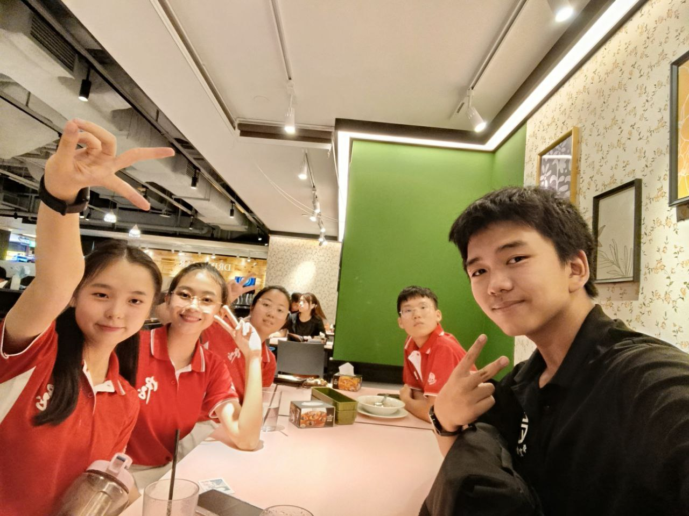
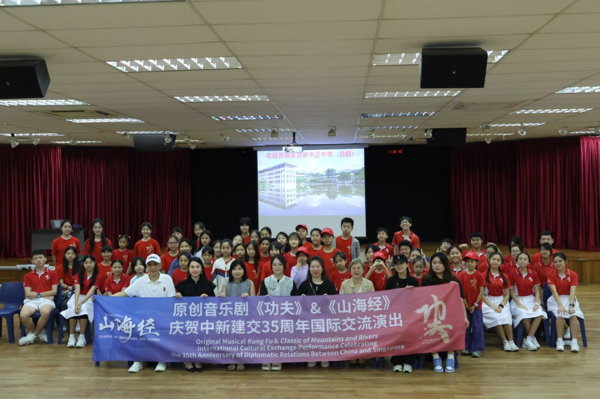

Awards & Experiences
经历与成就 · Four Years, Full Record · 四年，完整记录
This page documents the complete record of awards, recognitions, and significant experiences across four years at Chung Cheng High School. Each entry is presented with the context that explains its significance — not a credentials list, but an account of what was involved in earning each recognition and what it represents in the broader arc of development.
The awards are ordered by significance rather than chronology. The timeline at the bottom provides the chronological view of how the different strands of activity developed in relation to each other.
每个奖项背后都有一段具体的经历。这一页尽量把那段经历讲清楚，而不只是列出名字和年份。按重要程度排列，年表在页面底部。
Awards & Honours
按重要程度排列，最重要的在前 · Most significant first

The most significant award in this portfolio, and the most directly earned. The 我来报 national student journalism competition — 鲜新闻 (Fresh News) category — requires completing the full journalism production cycle under real competition conditions: on-site interviews with genuine subjects, script development, video production, and final submission, all within a defined and unextendable timeline.
There are no retakes on the interview. The story angle has to be identified and pursued on the ground, in the moment. The editorial decisions about what to include and how to structure the piece have to be made under time pressure, with no opportunity for the kind of revision that school projects typically allow. The quality of the outcome depends entirely on the team's collective competence under those conditions.
The gold award was the result. The process — the experience of working through the full journalism pipeline with real stakes — was the more lasting outcome.
这个竞赛之所以有意义，是因为它不给你修改的机会：采访一次，判断一次，剪辑一次，交出去。那种条件下拿到金奖，说明基本功是扎实的。
Chinese Language Elective Programme — awarded for sustained academic and creative commitment to the programme
连续两年获奖 — school-level recognition for holistic achievement and contribution
38th ZB Correspondents · 联合早报第38届学生摄影通讯员
Singapore Jiangsu Association · 新加坡江苏会 — community engagement and cross-cultural contribution
全国烹饪比赛 — evidence of breadth across domains beyond the performing and media arts
最佳女主角提名（团队作品）— behind-camera role in the nominated production
短片制作比赛，团队作品收获了最佳女主角提名。我的工作在幕后，但这是一个有意义的经历：第一次参与短片制作的完整流程，并且在自己不上镜的情况下，理解了制作人角色的独立价值。这也是一个关于团队荣誉的认识——作品的成功属于整个团队，不管你在不在镜头前。
A short film competition entry — our team's work received a Best Actress nomination. My involvement was behind the camera. The experience was the first exposure to short film production as a complete pipeline — script, shoot, edit, submit — and it provided a clear answer to a question I hadn't yet fully considered: whether a producer's contribution requires visibility to be meaningful. It doesn't. The nomination was a team outcome, and the behind-camera work was as integral to it as the on-screen performance.
Selected for the Science Development Programme in Secondary 1, which provided access to National University of Singapore research lab environments and structured training in experimental methodology. The programme involved working through genuine scientific inquiry processes — developing hypotheses, designing experiments, executing protocols, and interpreting results — rather than the simplified demonstrations common in standard secondary school science instruction.
The subsequent academic direction moved toward humanities, arts, and media rather than the sciences. However, the SDP's contribution was less about scientific content and more about transferable thinking habits: the discipline of forming clear questions before seeking answers, the practice of distinguishing between what the data actually shows and what you expected it to show, and the willingness to revise conclusions when the evidence requires it.
These habits — originally trained in a laboratory context — carry over directly into journalism, documentary work, and any form of creative production that involves making honest claims about the world.
理科计划的内容本身没有直接延续下去，但它训练出来的思维方式留下来了：先问清楚问题，再找答案；看数据说什么，而不是看你希望它说什么。这两个习惯，在后来的新闻和创作工作里一直都有用。

Four Years, One Direction
Sec 1 → Sec 4 · A continuous progression of increasing responsibility · 持续增长的责任担当
Enrolled in the Science Development Programme — NUS lab environments, experimental methodology training. Joined Chinese Drama CCA as a general member. First year of CLEP. This was the year of entering structured programmes and beginning to understand what sustained commitment to an activity actually involves.
科学发展计划（国大实验室）。加入华文话剧。语特第一年。第一次认真投入一个校外计划。
Acquired a camera and began serious development of photography and videography skills. Joined ARTFEST props core crew — beginning the backstage production track that would continue through Sec 4. Awarded the CLEP Scholarship, the first formal recognition of sustained commitment to the programme. Started understanding that documentation is an editorial act, not just a technical one.
第一台相机。ARTFEST道具核心。获语特奖学金。开始明白：记录也是一种有立场的创作。
The highest-output year in terms of major commitments running simultaneously. CLEP Music Film: full production pipeline. Taiwan Immersion: Memories Committee Leader, coordinating team documentation for 30+ participants. 38th Zaobao Correspondent: Best Group Photo Award. 我来报 competition: Gold Award in 鲜新闻 category. Eagles Award. SYF preparation. Five significant commitments, each demanding sustained attention, all in the same academic year.
语特社歌MV（全流程）。台湾浸濡（回忆组长）。第38届通讯员（最佳团体照片奖）。我来报金奖（鲜新闻）。鹰奖。五条线同时在跑，全部完成。
Elected CLEP Society Vice Chair for 悦习社 — coordinating operations across all subcommittees. Led video production for Hangzhou Immersion programme. Performed in SYF 2025 Arts Presentation. Continued mentoring junior CCA members. O Level examinations. The year in which the highest academic stakes and the deepest organisational responsibilities have coincided — by design, not by accident.
悦习社副主席。杭州浸濡视频制作主导。SYF呈献。带学弟。O水准年。责任最重的一年，也是准备最充分的一年。
Led the organisation of Chinese New Year hamper delivery for community beneficiaries. The project required end-to-end logistics management: sourcing, budgeting, packing, volunteer coordination, and delivery execution. As lead organiser, the responsibility extended beyond completing the logistical tasks to ensuring that the delivery experience itself was handled with appropriate care and attention — the point of the project was not the hamper, but the gesture it represented.
The experience reinforced a practical understanding of the difference between completing a service task and doing service work well: the former is a checklist; the latter requires keeping sight of why the checklist exists.
礼篮送到门口的那一刻，重要的不是礼篮本身，而是有人记得你、在意你。作为组织者，要确保这个意图在整个执行过程中没有被丢失。
Guided Primary 2 students through reading sessions as part of a school-community literacy programme. The work required patience and close observation: each student's reading difficulties were specific to them, and the approach that worked for one child rarely worked for another. Effective reading support means diagnosing the individual obstacle accurately before attempting to address it.
The programme also reinforced something that the CCA mentoring experience had suggested: being responsible for someone else's development requires a different quality of attention than being responsible for your own performance. You have to pay attention to what they are struggling with, not what you would struggle with.
辅导阅读最大的挑战是：每个孩子卡住的地方都不一样，你要先弄清楚是什么原因，再想怎么帮。这件事和做学弟带教的道理是一样的。